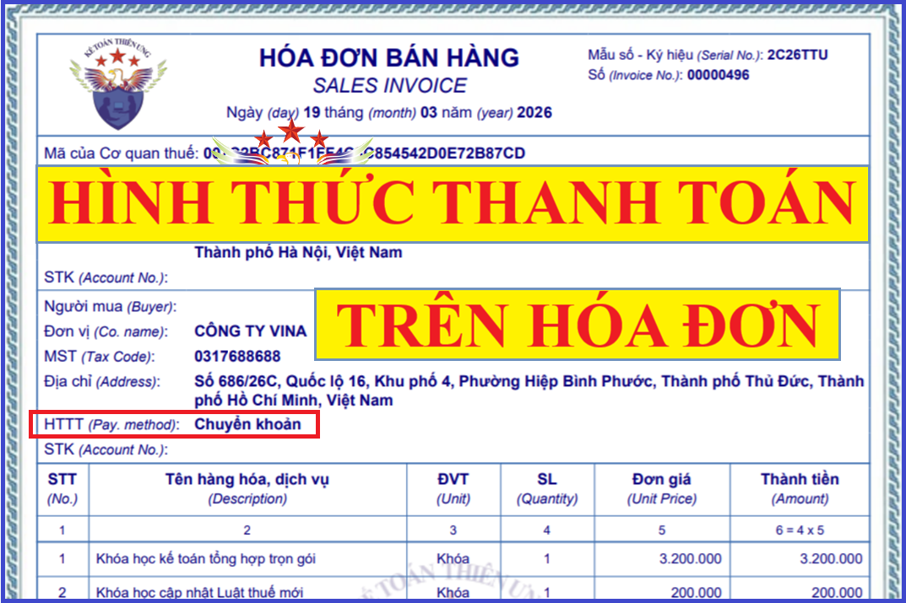

Các loại hình thức thanh toán ghi trên hóa đơn như thế nào? Hướng dẫn cách viết hình thức thanh toán trên hóa đơn GTGT (hoặc hóa đơn bán hàng) theo quy định.
Theo điều 10 của NĐ 123/2020/NĐ-CP quy định về các nội dung bắt buộc trên hóa đơn điện tử như:
- Tên hóa đơn, ký hiệu hóa đơn, ký hiệu mẫu số hóa đơn, số hóa đơn;
...
Và các nội dung khác bạn có thể xem cụ thể trong Nghị định.
Tuy nhiên trong các nội dung này không có nội dung về hình thức thanh toán
=> Đây là tiêu thức không bắt buộc trên hóa đơn.
Do vậy các bạn có thể áp dụng:
3 cách viết hình thức thanh toán trên hóa đơn như sau:
- Nếu thanh toán bằng tiền mặt: TM
- Nếu thanh toán bằng chuyển khoản: CK
- Nếu chưa xác định được hình thức thanh toán: TM/CK
Hoặc các bạn cũng có thể ghi rõ là Tiền mặt hoặc ghi rõ là Chuyển khoản

|
Theo Công văn Số: 708/CT-TTHT ngày 21/1/2020 của Cục thuế TP. HCM hướng dẫn: Căn cứ các quy định nêu trên, tiêu thức “Hình thức thanh toán” không phải nội dung bắt buộc trên hóa đơn, trường hợp Công ty có nhận các hóa đơn đầu vào có tiêu thức “Hình thức thanh toán” để trống hoặc viết tắt thì các hóa đơn này là phù hợp để kê khai, khấu trừ thuế GTGT đầu vào và tính vào chi phí được trừ nếu đáp ứng các điều kiện theo quy định pháp luật thuế GTGT, thuế TNDN. |
|
Theo Công văn 46409/CT-TTHT ngày 10/7/2017 của Cục thuế TP. Hà Nội: Căn cứ các quy định trên, Trường hợp Chi nhánh Công ty TNHH Sagawa Express Việt Nam đứng ra nhận lô hàng qua hãng tàu Hueng - A, chi phí của lô hàng công ty thanh toán bằng phương thức chuyển khoản thì tại chỉ tiêu “Hình thức thanh toán” bên bán khi viết hóa đơn viết vào chỉ tiêu này là: tiền mặt (TM) hoặc chuyển khoản (CK) nên Công ty không phải đóng dấu “bán hàng chuyển khoản” tại tiêu thức người mua hàng (ký, ghi rõ họ tên). |
Chú ý: Hóa đơn có giá trị từ 20.000.000 vnđ trở lên nếu muốn được khấu trừ thuế GTGT và được tính vào chi phí được trừ khi tính thuế TNDN thì bắt buộc phải chuyển khoản qua ngân hàng.
=> Tức là phải có chứng từ thanh toán không dùng tiền mặt
|
Căn cứ theo Điều 9 Nghị định 320/2025/NĐ-CP hướng dẫn thi hành Luật thuế TNDN áp dụng từ kỳ tính thuế 2025 Điều 9. Các khoản chi được trừ khi xác định thu nhập chịu thuế b) Khoản chi có đủ hóa đơn, chứng từ theo quy định của pháp luật. Đối với các trường hợp: Mua sản phẩm là nông, lâm, thủy sản của người sản xuất, đánh bắt trực tiếp bán ra; mua sản phẩm thủ công làm bằng đay, cói, tre, nứa, lá, sõng, mây, rơm, vỏ dừa, sọ dừa hoặc nguyên liệu tận dụng từ sản phẩm nông nghiệp của người sản xuất thủ công trực tiếp bán ra; mua phế liệu của người trực tiếp thu nhặt; mua đồ dùng, tài sản của hộ gia đình, cá nhân trực tiếp bán ra; mua hàng hóa, dịch vụ của cá nhân, hộ kinh doanh (không bao gồm các trường hợp nêu trên) có mức doanh thu dưới ngưỡng doanh thu chịu thuế giá trị gia tăng phải có chứng từ chi trả tiền theo quy định của pháp luật về kế toán, hóa đơn, chứng từ cho người bán (đối với trường hợp giá trị mua hàng hóa, dịch vụ trong ngày của từng hộ, cá nhân từ 05 triệu đồng trở lên phải thanh toán không dùng tiền mặt) và Bảng kê thu mua hàng hóa, dịch vụ do người đại diện theo pháp luật hoặc người được ủy quyền của doanh nghiệp ký và chịu trách nhiệm; c) Khoản chi có chứng từ thanh toán không dùng tiền mặt đối với trường hợp mua hàng hóa, dịch vụ và các khoản thanh toán khác từng lần có giá trị từ 05 triệu đồng trở lên. Chứng từ thanh toán không dùng tiền mặt thực hiện theo quy định của các văn bản pháp luật về thuế giá trị gia tăng. c1) Trường hợp mua hàng hóa, dịch vụ của một người bán có giá trị dưới 05 triệu đồng nhưng mua nhiều lần trong cùng một ngày có tổng giá trị từ 05 triệu đồng trở lên thì chỉ được tính vào chi phí được trừ trong trường hợp có chứng từ thanh toán không dùng tiền mặt; c2) Trường hợp doanh nghiệp phát sinh các khoản chi do doanh nghiệp ủy quyền/giao cho người lao động trực tiếp mua hộ hàng hóa, dịch vụ để phục vụ hoạt động sản xuất kinh doanh của doanh nghiệp từ 05 triệu đồng trở lên mà các khoản chi phí này được thanh toán bởi người lao động bằng dịch vụ thanh toán không dùng tiền mặt thì tính vào chi phí được trừ nếu đáp ứng đủ các điều kiện sau: Có hóa đơn, chứng từ theo quy định của pháp luật về kế toán, hóa đơn, chứng từ và quy chế tài chính hoặc quy chế nội bộ hoặc quyết định của doanh nghiệp quy định việc ủy quyền hoặc cho phép người lao động được phép thanh toán khoản mua hàng hóa, dịch vụ để phục vụ hoạt động sản xuất kinh doanh của doanh nghiệp và khoản chi này sau đó được doanh nghiệp thanh toán lại cho người lao động; c3) Trường hợp mua hàng hóa, dịch vụ từng lần có giá trị từ 05 triệu đồng trở lên mà đến thời điểm ghi nhận chi phí, doanh nghiệp chưa thanh toán thì doanh nghiệp được tính vào chi phí được trừ khi xác định thu nhập chịu thuế. Trường hợp khi thanh toán doanh nghiệp không có chứng từ thanh toán không dùng tiền mặt thì doanh nghiệp phải kê khai, điều chỉnh giảm chi phí đối với phần giá trị hàng hóa, dịch vụ không có chứng từ thanh toán không dùng tiền mặt vào kỳ tính thuế phát sinh việc thanh toán bằng tiền mặt (kể cả trong trường hợp cơ quan thuế và các cơ quan chức năng đã có quyết định thanh tra, kiểm tra kỳ tính thuế có phát sinh khoản chi phí này). |
-> Còn đây là quy định về việc viết hình thức thanh toán trên hóa đơn.
Theo Công văn 9208/CT-TTHT ngày 22/09/2017 của Cục thuế TP Hồ CHí Minh
"Căn cứ quy định trên, tiêu thức “hình thức thanh toán” là nội dung không bắt buộc phải có trên hóa đơn. Trường hợp theo trình bày, Công ty khi lập hóa đơn giao cho khách hàng tại tiêu thức này có ghi: TM/CK, các nội dung bắt buộc khác lập đúng theo quy định thì hóa đơn vẫn hợp lệ để kê khai thuế."
Để hiểu rõ hơn về cách viết hóa đơn GTGT sao cho hợp lý hợp lệ mời các bạn xem thêm: Cách viết hóa đơn giá trị gia tăng
---------------------------------------------
Chúc các bạn thành công!
CÔNG TY TNHH TƯ VẤN & ĐÀO TẠO DIỆU TÂM
Chuyên Tư Vấn Quản Trị Doanh Nghiệp & Đào Tạo Kế Toán Thực Chiến
--------------------------------------------------------------------------------